| clump_type | clone_index | nbr_radius | pvalue_adj | num_nbrs | expected_num_nbrs | raw_count | va | ja | cdr3a | vb | jb | cdr3b | clonotype_fdr_value | clumping_group | clusters_gex | clusters_tcr |
|---|---|---|---|---|---|---|---|---|---|---|---|---|---|---|---|---|
| global | 7005 | 96 | 2.567289e-11 | 35 | 5.866902 | 585987.00 | IGKV2-30*01 | IGKJ1*01 | CMQGTHWPPAF | IGHV3-23*01 | IGHJ4*01 | CAKALGYW | 2.567289e-11 | 1 | 9 | 3 |
| global | 8074 | 96 | 1.238948e-08 | 33 | 6.464568 | 645682.00 | IGKV2D-30*01 | IGKJ5*01 | CMQGTHWPPTF | IGHV3-7*01 | IGHJ4*01 | CARELDYW | 6.194738e-09 | 1 | 1 | 3 |
| global | 7051 | 96 | 1.965636e-07 | 28 | 5.149416 | 514345.00 | IGKV2-30*01 | IGKJ1*01 | CMQGTHWPQTF | IGHV3-23*01 | IGHJ4*01 | CARGNSAYW | 5.864788e-08 | 1 | 7 | 3 |
| global | 7295 | 96 | 2.345915e-07 | 37 | 8.995490 | 898794.00 | IGKV2-30*01 | IGKJ4*01 | CMQGTHWPLTF | IGHV3-23*01 | IGHJ5*01 | CAKGTWADYW | 5.864788e-08 | 1 | 7 | 3 |
| global | 7053 | 96 | 6.660351e-06 | 24 | 4.400184 | 439491.00 | IGKV2-30*01 | IGKJ1*01 | CMQGTHWPQTF | IGHV3-11*01 | IGHJ3*01 | CSAFDIW | 1.332070e-06 | 1 | 5 | 3 |
| global | 7277 | 96 | 2.158000e-05 | 22 | 3.897371 | 389270.00 | IGKV2-30*01 | IGKJ4*01 | CMQGAHWPLTF | IGHV3-30*01 | IGHJ4*01 | CALGQLLDYW | 3.418104e-06 | 1 | 5 | 3 |
| global | 7077 | 96 | 2.721084e-05 | 30 | 7.309617 | 730465.00 | IGKV2-30*01 | IGKJ1*01 | CMQGTHWPWTF | IGHV3-23*01 | IGHJ4*01 | CAKDLGAGTW | 3.418104e-06 | 1 | 7 | 3 |
| global | 7054 | 96 | 2.734484e-05 | 32 | 8.241588 | 823171.00 | IGKV2-30*01 | IGKJ1*01 | CMQGTHWPRTF | IGHV3-74*01 | IGHJ6*01 | CARDYGMDVW | 3.418104e-06 | 1 | 1 | 3 |
| global | 7278 | 96 | 1.944482e-04 | 18 | 2.882425 | 287897.00 | IGKV2-30*01 | IGKJ4*01 | CMQGSHWPLTF | IGHV3-74*01 | IGHJ4*01 | CARGPADL | 2.160535e-05 | 1 | 1 | 3 |
| global | 7096 | 96 | 3.284006e-04 | 17 | 2.630803 | 262765.00 | IGKV2-30*01 | IGKJ1*01 | CMQGTHWSWTF | IGHV3-7*01 | IGHJ4*01 | CARDRGSRC | 3.284006e-05 | 1 | 8 | 3 |
| global | 7242 | 96 | 7.986885e-04 | 14 | 1.798365 | 179621.00 | IGKV2-30*01 | IGKJ2*01 | CMQHTYWPHTF | IGHV3-7*01 | IGHJ4*01 | CTNGGSYW | 7.260804e-05 | 1 | 1 | 3 |
| global | 7138 | 96 | 1.330657e-03 | 21 | 4.481823 | 447663.00 | IGKV2-30*01 | IGKJ2*01 | CMQGTHWPFTF | IGHV3-7*01 | IGHJ4*01 | CARDPGWGALDYW | 1.108881e-04 | 1 | 1 | 3 |
| global | 7078 | 96 | 2.890344e-03 | 21 | 4.695321 | 469213.00 | IGKV2-30*01 | IGKJ1*01 | CMQGTHWPWTF | IGHV3-23*01 | IGHJ4*01 | CAKVQWELPW | 2.075084e-04 | 1 | 2 | 3 |
| global | 7051 | 72 | 2.905118e-03 | 9 | 0.642835 | 64209.00 | IGKV2-30*01 | IGKJ1*01 | CMQGTHWPQTF | IGHV3-23*01 | IGHJ4*01 | CARGNSAYW | 5.864788e-08 | 1 | 7 | 3 |
| global | 7080 | 96 | 3.301895e-03 | 27 | 7.545638 | 754051.00 | IGKV2-30*01 | IGKJ1*01 | CMQGTHWPWTF | IGHV3-48*01 | IGHJ4*01 | CAAAGWGDYW | 2.201264e-04 | 1 | 6 | 3 |
| global | 4259 | 96 | 7.132260e-03 | 42 | 16.248675 | 1623374.00 | IGKV1D-17*01 | IGKJ1*01 | CLQHNSYPRTF | IGHV3-23*01 | IGHJ4*01 | CAKELSLKDW | 4.402603e-04 | 2 | 8 | 6 |
| global | 7255 | 96 | 7.484425e-03 | 13 | 1.826499 | 182431.00 | IGKV2-30*01 | IGKJ3*01 | CMQGTHWLFTF | IGHV3-11*01 | IGHJ6*01 | CGRGNGWVW | 4.402603e-04 | 1 | 12 | 3 |
| global | 7217 | 96 | 1.054440e-02 | 15 | 2.584577 | 258313.00 | IGKV2-30*01 | IGKJ2*01 | CMQGTHWPYTF | IGHV3-7*01 | IGHJ3*01 | CATREVTLNIW | 5.854521e-04 | 1 | 13 | 3 |
| global | 20502 | 96 | 1.112359e-02 | 16 | 2.975026 | 297146.00 | IGLV2-23*01 | IGLJ3*01 | CCSYAGSSTWVF | IGHV5-10-1*01 | IGHJ3*01 | CARQSGSGRAFDIW | 5.854521e-04 | 17 | 2 | 0 |
| global | 7118 | 96 | 1.249870e-02 | 9 | 0.765227 | 76431.00 | IGKV2-30*01 | IGKJ2*01 | CMQGAYWPGTF | IGHV3-7*01 | IGHJ4*01 | CARGVRGAGW | 6.249351e-04 | 1 | 10 | 3 |
| global | 7056 | 96 | 1.501275e-02 | 20 | 4.736857 | 473118.00 | IGKV2-30*01 | IGKJ1*01 | CMQGTHWPRTF | IGHV3-7*01 | IGHJ4*01 | CVRGISSPDYW | 6.973937e-04 | 1 | 1 | 3 |
| global | 6469 | 96 | 1.534266e-02 | 14 | 2.295111 | 229236.00 | IGKV2-24*01 | IGKJ1*01 | CTQATDFPWTF | IGHV3-23*01 | IGHJ4*01 | CSPGGGGGW | 6.973937e-04 | 1 | 1 | 3 |
| global | 1836 | 96 | 1.885393e-02 | 3 | 0.010443 | 1043.00 | IGKV1-39*01 | IGKJ2*01 | CQQSIKMPYTF | IGHV3-48*01 | IGHJ4*01 | CARDSGTCDDDNCHNFDYW | 8.086200e-04 | 9 | 1 | 9 |
| global | 7073 | 96 | 1.940688e-02 | 13 | 1.987963 | 198558.00 | IGKV2-30*01 | IGKJ1*01 | CMQGTHWPWTF | IGHV3-15*01 | IGHJ4*01 | CTRRDGYNSM | 8.086200e-04 | 1 | 3 | 3 |
| global | 422 | 96 | 2.733149e-02 | 8 | 0.608810 | 60825.00 | IGKV1-16*01 | IGKJ1*01 | CQQYNSYPRTF | IGHV4-34*01 | IGHJ4*01 | CATTIGYRQAGGYW | 1.093259e-03 | 5 | 5 | 2 |
| global | 7594 | 96 | 2.979244e-02 | 10 | 1.114672 | 111338.00 | IGKV2D-28*01 | IGKJ3*01 | CMQALQTPFTF | IGHV3-33*01 | IGHJ6*01 | CARERMVRGVIYYYYGMDVW | 1.145863e-03 | 3 | 11 | 3 |
| global | 7039 | 96 | 4.265040e-02 | 21 | 5.544876 | 554133.00 | IGKV2-30*01 | IGKJ1*01 | CMQGTHWPPWTF | IGHV3-23*01 | IGHJ4*01 | CIFDFW | 1.579645e-03 | 1 | 2 | 3 |
| global | 7039 | 72 | 4.619332e-02 | 9 | 0.896443 | 89587.00 | IGKV2-30*01 | IGKJ1*01 | CMQGTHWPPWTF | IGHV3-23*01 | IGHJ4*01 | CIFDFW | 1.579645e-03 | 1 | 2 | 3 |
| global | 4252 | 96 | 4.846449e-02 | 46 | 20.048058 | 2002723.00 | IGKV1D-17*01 | IGKJ1*01 | CLQHNSYPRTF | IGHV3-23*01 | IGHJ4*01 | CAKDWGGYPHW | 1.671189e-03 | 2 | 5 | 6 |
| global | 19150 | 96 | 5.254761e-02 | 20 | 5.139361 | 514533.00 | IGLV2-14*01 | IGLJ2*01 | CSSYTSSSTLVF | IGHV3-43*01 | IGHJ6*01 | CAKDVGSWNYYGMDVW | 1.751587e-03 | 15 | 11 | 0 |
| global | 720 | 96 | 1.112177e-01 | 32 | 11.934504 | 1192020.00 | IGKV1-17*01 | IGKJ2*01 | CLQHNSYPHTF | IGHV3-23*01 | IGHJ4*01 | CAKALYGPDYW | 3.526561e-03 | 2 | 4 | 6 |
| global | 428 | 96 | 1.128499e-01 | 29 | 10.202295 | 1019251.00 | IGKV1-16*01 | IGKJ1*01 | CQQYNSYPWTF | IGHV3-23*01 | IGHJ4*01 | CAKVIAAAGYYW | 3.526561e-03 | 2 | 0 | 6 |
| global | 20137 | 96 | 1.421368e-01 | 21 | 5.990362 | 599228.00 | IGLV2-23*01 | IGLJ1*01 | CCSYAGSSTYVF | IGHV1-69D*01 | IGHJ2*01 | CARDSGNWYFDLW | 4.307175e-03 | 4 | 0 | 0 |
| global | 7023 | 96 | 2.029769e-01 | 22 | 6.648273 | 664349.00 | IGKV2-30*01 | IGKJ1*01 | CMQGTHWPPTF | IGHV3-33*01 | IGHJ4*01 | CARLGVGDYW | 5.332129e-03 | 1 | 13 | 3 |
| global | 417 | 96 | 2.199425e-01 | 66 | 35.140169 | 3510787.00 | IGKV1-16*01 | IGKJ1*01 | CQQYNSYPRTF | IGHV3-23*01 | IGHJ4*01 | CANTWSTFDYW | 5.332129e-03 | 2 | 13 | 6 |
| global | 4319 | 96 | 2.206841e-01 | 24 | 7.750479 | 774119.00 | IGKV1D-17*01 | IGKJ2*01 | CLQHSSFPYTF | IGHV3-23*01 | IGHJ6*01 | CARYFGVGDW | 5.332129e-03 | 2 | 1 | 6 |
| global | 19744 | 96 | 2.462715e-01 | 42 | 18.699981 | 1867906.00 | IGLV2-14*01 | IGLJ3*01 | CSSYTSSSTWVF | IGHV4-39*01 | IGHJ4*01 | CARQGIAARPFDYW | 5.332129e-03 | 16 | 2 | 13 |
| global | 17722 | 72 | 2.497190e-01 | 1 | 0.000002 | 0.25 | IGLV1-51*01 | IGLJ3*01 | CGTWDSSLSAGVF | IGHV5-10-1*01 | IGHJ6*01 | CARRGGNSAFEFYYYNGMDVW | 5.332129e-03 | 14 | 2 | 5 |
| global | 14227 | 72 | 2.498892e-01 | 1 | 0.000002 | 0.25 | IGKV4-1*01 | IGKJ4*01 | CQQYYSTPLTF | IGHV4-59*01 | IGHJ4*01 | CARGEGETIFGVTMFLWYFDYW | 5.332129e-03 | 13 | 4 | 7 |
| global | 14227 | 96 | 2.498892e-01 | 1 | 0.000002 | 0.25 | IGKV4-1*01 | IGKJ4*01 | CQQYYSTPLTF | IGHV4-59*01 | IGHJ4*01 | CARGEGETIFGVTMFLWYFDYW | 5.332129e-03 | 13 | 4 | 7 |
| global | 20539 | 72 | 2.498892e-01 | 1 | 0.000002 | 0.25 | IGLV2-23*01 | IGLJ3*01 | CCSYAGSSTWVF | IGHV3-33*01 | IGHJ3*01 | CARALVGTAMVPSAFDIW | 5.332129e-03 | 18 | 4 | 0 |
| global | 693 | 72 | 2.506000e-01 | 1 | 0.000003 | 0.25 | IGKV1-17*01 | IGKJ1*01 | CLQHNSYPWTF | IGHV3-49*01 | IGHJ4*01 | CSRSFTEVTFEYLDYW | 5.332129e-03 | 8 | 3 | 6 |
| global | 15055 | 96 | 2.506101e-01 | 1 | 0.000003 | 0.25 | IGLV1-40*01 | IGLJ3*01 | CQSYDRNLDGWVF | IGHV2-5*01 | IGHJ5*01 | CAYRQRITMIRGQRVSDWFDPW | 5.332129e-03 | 6 | 5 | 15 |
| global | 17108 | 72 | 2.506101e-01 | 1 | 0.000003 | 0.25 | IGLV1-51*01 | IGLJ2*01 | CATWDSSLGAEVF | IGHV3-73*01 | IGHJ4*01 | CTKYCLDTTCSGGHYW | 5.332129e-03 | 7 | 3 | 5 |
| global | 17102 | 72 | 2.506101e-01 | 1 | 0.000003 | 0.25 | IGLV1-51*01 | IGLJ2*01 | CAAWDESLSAEFF | IGHV3-73*01 | IGHJ4*01 | CTQYCVAAYCSGGHYW | 5.332129e-03 | 7 | 1 | 5 |
| global | 15058 | 72 | 2.506101e-01 | 1 | 0.000003 | 0.25 | IGLV1-40*01 | IGLJ3*01 | CQSYDRTLDHWVL | IGHV2-5*01 | IGHJ5*01 | CAYRRGITLIRGRRASDWFDPW | 5.332129e-03 | 6 | 5 | 15 |
| global | 15055 | 72 | 2.506101e-01 | 1 | 0.000003 | 0.25 | IGLV1-40*01 | IGLJ3*01 | CQSYDRNLDGWVF | IGHV2-5*01 | IGHJ5*01 | CAYRQRITMIRGQRVSDWFDPW | 5.332129e-03 | 6 | 5 | 15 |
| global | 7352 | 96 | 2.635124e-01 | 14 | 2.932465 | 292895.00 | IGKV2-30*01 | IGKJ5*01 | CMQGTHWPQAF | IGHV1-18*01 | IGHJ4*01 | CARVPGFYW | 5.489843e-03 | 1 | 3 | 3 |
| global | 3458 | 96 | 2.965372e-01 | 33 | 13.133427 | 1311821.00 | IGKV1-8*01 | IGKJ2*01 | CQQYYSYPRTF | IGHV4-34*01 | IGHJ1*01 | CARGFGYGGNW | 6.051780e-03 | 5 | 4 | 2 |
| global | 20428 | 96 | 3.207890e-01 | 30 | 11.370260 | 1135754.00 | IGLV2-23*01 | IGLJ3*01 | CCSYAGSSTFGF | IGHV3-48*01 | IGHJ4*01 | CARDPGSPFDYW | 6.415779e-03 | 4 | 4 | 0 |
tcr_clumping_logos
This figure summarizes the results of a CoNGA analysis that produces scores (TCR clumping) and clusters. At the top are six 2D UMAP projections of clonotypes in the dataset based on GEX similarity (top left three panels) and TCR similarity (top right three panels), colored from left to right by GEX cluster assignment; TCR clumping score; joint GEX:TCR cluster assignment for clonotypes with significant TCR clumping scores, using a bicolored disk whose left half indicates GEX cluster and whose right half indicates TCR cluster; TCR cluster; TCR clumping; GEX:TCR cluster assignments for TCR clumping hits, as in the third panel.
Below are two rows of GEX landscape plots colored by (first row, left) expression of selected marker genes, (second row, left) Z-score normalized and GEX-neighborhood averaged expression of the same marker genes, and (both rows, right) TCR sequence features (see CoNGA manuscript Table S3 for TCR feature descriptions).
GEX and TCR sequence features of TCR clumping hits in clusters with 3 or more hits are summarized by a series of logo-style visualizations, from left to right: differentially expressed genes (DEGs); TCR sequence logos showing the V and J gene usage and CDR3 sequences for the TCR alpha and beta chains; biased TCR sequence scores, with red indicating elevated scores and blue indicating decreased scores relative to the rest of the dataset (see CoNGA manuscript Table S3 for score definitions); GEX 'logos' for each cluster consisting of a panel of marker genes shown with red disks colored by mean expression and sized according to the fraction of cells expressing the gene (gene names are given above).
DEG and TCRseq sequence logos are scaled by the adjusted P value of the associations, with full logo height requiring a top adjusted P value below 10-6. DEGs with fold-change less than 2 are shown in gray. Each cluster is indicated by a bicolored disk colored according to GEX cluster (left half) and TCR cluster (right half). The two numbers above each disk show the number of hits within the cluster (on the left) and the total number of cells in those clonotypes (on the right). The dendrogram at the left shows similarity relationships among the clusters based on connections in the GEX and TCR neighbor graphs.
The choice of which marker genes to use for the GEX umap panels and for the cluster GEX logos can be configured using run_conga.py command line flags or arguments to the conga.plotting.make_logo_plots function.
Image source: all_bcell_tcr_clumping_logos.png
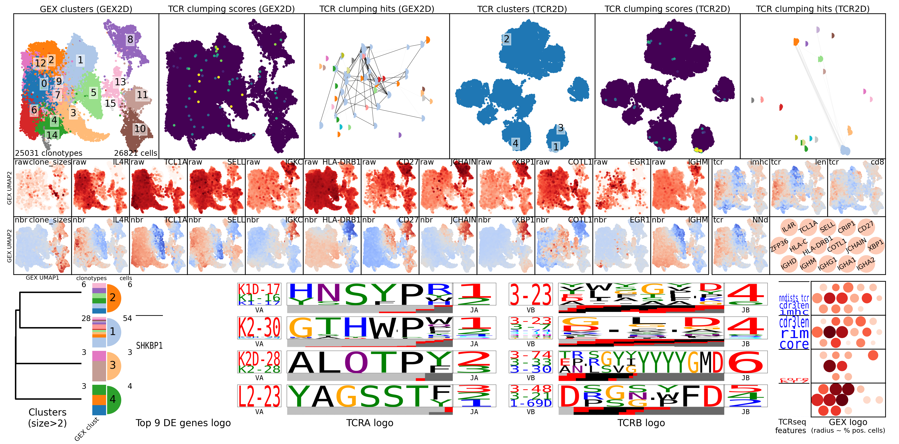
tcr_graph_vs_gex_features
This table has results from a graph-vs-features analysis in which we look for genes that are differentially expressed (elevated) in specific neighborhoods of the TCR neighbor graph. Differential expression is assessed by a ttest first, for speed, and then by a mannwhitneyu test for nbrhood/score combinations whose ttest P-value passes an initial threshold (default is 10* the pvalue threshold).
Each row of the table represents a single significant association, in other words a neighborhood (defined by the central clonotype index) and a gene.
The columns are as follows:
ttest_pvalue_adj= ttest_pvalue * number of comparisons mwu_pvalue_adj= mannwhitney-U P-value * number of comparisons log2enr = log2 fold change of gene in neighborhood (will be positive) gex_cluster= the consensus GEX cluster of the clonotypes w/ biased scores tcr_cluster= the consensus TCR cluster of the clonotypes w/ biased scores num_fg= the number of clonotypes in the neighborhood (including center) mean_fg= the mean value of the feature in the neighborhood mean_bg= the mean value of the feature outside the neighborhood feature= the name of the gene mait_fraction= the fraction of the skewed clonotypes that have an invariant TCR clone_index= the index in the anndata dataset of the clonotype that is the center of the neighborhood.
| ttest_pvalue_adj | mwu_pvalue_adj | log2enr | gex_cluster | tcr_cluster | feature | mean_fg | mean_bg | num_fg | clone_index | mait_fraction | nbr_frac | graph_type | feature_type |
|---|---|---|---|---|---|---|---|---|---|---|---|---|---|
| 4.423906e-12 | 6.726182e-51 | 2.208973 | 1 | 3 | RASSF6 | 0.088751 | 0.019875 | 2504 | 6667 | 0.0 | 0.1 | tcr_nbr | gex |
| 1.245436e-25 | 6.430431e-48 | 1.051405 | 1 | 3 | AIM2 | 0.349441 | 0.183834 | 2504 | 7126 | 0.0 | 0.1 | tcr_nbr | gex |
| 1.690107e-26 | 9.033014e-48 | 0.969109 | 1 | 3 | CD27 | 0.431428 | 0.243389 | 2504 | 6549 | 0.0 | 0.1 | tcr_nbr | gex |
| 3.619600e-11 | 1.064069e-46 | 2.166833 | 1 | 3 | RASSF6 | 0.087082 | 0.020060 | 2504 | 7126 | 0.0 | 0.1 | tcr_nbr | gex |
| 6.511117e-25 | 6.993912e-46 | 1.043951 | 1 | 3 | AIM2 | 0.348167 | 0.183976 | 2504 | 6549 | 0.0 | 0.1 | tcr_nbr | gex |
| 6.265088e-11 | 1.159524e-45 | 2.127767 | 1 | 3 | RASSF6 | 0.085550 | 0.020230 | 2504 | 6549 | 0.0 | 0.1 | tcr_nbr | gex |
| 1.924138e-10 | 1.401748e-44 | 2.100227 | 1 | 3 | RASSF6 | 0.084477 | 0.020350 | 2504 | 7326 | 0.0 | 0.1 | tcr_nbr | gex |
| 1.301898e-24 | 1.987008e-44 | 1.043195 | 1 | 3 | AIM2 | 0.348038 | 0.183990 | 2504 | 7093 | 0.0 | 0.1 | tcr_nbr | gex |
| 3.330487e-10 | 1.367078e-43 | 2.085558 | 1 | 3 | RASSF6 | 0.083909 | 0.020413 | 2504 | 6452 | 0.0 | 0.1 | tcr_nbr | gex |
| 1.499496e-10 | 9.660867e-43 | 2.115129 | 1 | 3 | RASSF6 | 0.085057 | 0.020285 | 2504 | 7978 | 0.0 | 0.1 | tcr_nbr | gex |
| 1.156091e-09 | 1.437471e-41 | 2.074665 | 1 | 3 | RASSF6 | 0.083489 | 0.020460 | 2504 | 7023 | 0.0 | 0.1 | tcr_nbr | gex |
| 1.312165e-09 | 1.233118e-40 | 2.064054 | 1 | 3 | RASSF6 | 0.083080 | 0.020505 | 2504 | 7094 | 0.0 | 0.1 | tcr_nbr | gex |
| 4.994480e-09 | 1.723831e-40 | 1.984064 | 1 | 3 | RASSF6 | 0.080034 | 0.020844 | 2504 | 7581 | 0.0 | 0.1 | tcr_nbr | gex |
| 1.268545e-09 | 9.652370e-40 | 2.062619 | 1 | 3 | RASSF6 | 0.083025 | 0.020511 | 2504 | 7781 | 0.0 | 0.1 | tcr_nbr | gex |
| 1.924881e-09 | 1.068058e-39 | 2.065875 | 1 | 3 | RASSF6 | 0.083150 | 0.020497 | 2504 | 7118 | 0.0 | 0.1 | tcr_nbr | gex |
| 2.205861e-09 | 1.117847e-39 | 2.034007 | 1 | 3 | RASSF6 | 0.081928 | 0.020633 | 2504 | 7817 | 0.0 | 0.1 | tcr_nbr | gex |
| 1.954256e-09 | 1.138564e-39 | 2.029864 | 1 | 3 | RASSF6 | 0.081770 | 0.020651 | 2504 | 7093 | 0.0 | 0.1 | tcr_nbr | gex |
| 1.980971e-09 | 8.637176e-39 | 2.066300 | 1 | 3 | RASSF6 | 0.083166 | 0.020495 | 2504 | 7089 | 0.0 | 0.1 | tcr_nbr | gex |
| 3.639497e-09 | 9.914717e-39 | 2.020135 | 1 | 3 | RASSF6 | 0.081400 | 0.020692 | 2504 | 7819 | 0.0 | 0.1 | tcr_nbr | gex |
| 4.284904e-09 | 1.089772e-38 | 2.007284 | 1 | 3 | RASSF6 | 0.080912 | 0.020746 | 2504 | 7338 | 0.0 | 0.1 | tcr_nbr | gex |
| 7.248790e-09 | 1.198709e-38 | 1.995066 | 1 | 3 | RASSF6 | 0.080449 | 0.020797 | 2504 | 7470 | 0.0 | 0.1 | tcr_nbr | gex |
| 3.499697e-21 | 5.945702e-38 | 0.979919 | 1 | 3 | AIM2 | 0.337357 | 0.185177 | 2504 | 7074 | 0.0 | 0.1 | tcr_nbr | gex |
| 1.100221e-20 | 6.658757e-38 | 0.878237 | 1 | 3 | CD27 | 0.412991 | 0.245438 | 2504 | 7126 | 0.0 | 0.1 | tcr_nbr | gex |
| 4.195796e-09 | 7.817443e-38 | 2.050334 | 1 | 3 | RASSF6 | 0.082553 | 0.020564 | 2504 | 7242 | 0.0 | 0.1 | tcr_nbr | gex |
| 5.254316e-09 | 8.274671e-38 | 2.027109 | 1 | 3 | RASSF6 | 0.081665 | 0.020662 | 2504 | 7213 | 0.0 | 0.1 | tcr_nbr | gex |
| 5.158125e-09 | 8.525326e-38 | 2.033012 | 1 | 3 | RASSF6 | 0.081890 | 0.020637 | 2504 | 6983 | 0.0 | 0.1 | tcr_nbr | gex |
| 6.042741e-09 | 9.056572e-38 | 2.017605 | 1 | 3 | RASSF6 | 0.081304 | 0.020702 | 2504 | 7230 | 0.0 | 0.1 | tcr_nbr | gex |
| 5.425136e-09 | 9.174797e-38 | 2.004893 | 1 | 3 | RASSF6 | 0.080821 | 0.020756 | 2504 | 7336 | 0.0 | 0.1 | tcr_nbr | gex |
| 5.159024e-09 | 6.293252e-37 | 2.031391 | 1 | 3 | RASSF6 | 0.081829 | 0.020644 | 2504 | 7937 | 0.0 | 0.1 | tcr_nbr | gex |
| 7.839057e-09 | 7.033671e-37 | 2.019572 | 1 | 3 | RASSF6 | 0.081378 | 0.020694 | 2504 | 8042 | 0.0 | 0.1 | tcr_nbr | gex |
| 1.083192e-08 | 7.861394e-37 | 1.980709 | 1 | 3 | RASSF6 | 0.079907 | 0.020858 | 2504 | 7232 | 0.0 | 0.1 | tcr_nbr | gex |
| 1.129913e-08 | 7.973838e-37 | 1.991608 | 1 | 3 | RASSF6 | 0.080318 | 0.020812 | 2504 | 7884 | 0.0 | 0.1 | tcr_nbr | gex |
| 1.482843e-08 | 8.188127e-37 | 1.973086 | 1 | 3 | RASSF6 | 0.079621 | 0.020889 | 2504 | 7248 | 0.0 | 0.1 | tcr_nbr | gex |
| 1.229771e-08 | 8.358670e-37 | 1.987820 | 1 | 3 | RASSF6 | 0.080175 | 0.020828 | 2504 | 7249 | 0.0 | 0.1 | tcr_nbr | gex |
| 1.916248e-08 | 9.136089e-37 | 1.966815 | 1 | 3 | RASSF6 | 0.079385 | 0.020916 | 2504 | 8059 | 0.0 | 0.1 | tcr_nbr | gex |
| 1.737754e-08 | 9.439362e-37 | 1.951872 | 1 | 3 | RASSF6 | 0.078826 | 0.020978 | 2504 | 7099 | 0.0 | 0.1 | tcr_nbr | gex |
| 2.319782e-08 | 9.521207e-37 | 1.957971 | 1 | 0 | RASSF6 | 0.079054 | 0.020952 | 2504 | 18370 | 0.0 | 0.1 | tcr_nbr | gex |
| 7.965815e-09 | 5.020615e-36 | 2.022314 | 1 | 3 | RASSF6 | 0.081483 | 0.020683 | 2504 | 7228 | 0.0 | 0.1 | tcr_nbr | gex |
| 1.593675e-20 | 5.038452e-36 | 0.973533 | 1 | 3 | AIM2 | 0.336292 | 0.185296 | 2504 | 7978 | 0.0 | 0.1 | tcr_nbr | gex |
| 1.855023e-08 | 5.964428e-36 | 1.983190 | 1 | 3 | RASSF6 | 0.080001 | 0.020847 | 2504 | 6973 | 0.0 | 0.1 | tcr_nbr | gex |
| 1.327053e-08 | 6.040683e-36 | 1.985666 | 1 | 3 | RASSF6 | 0.080094 | 0.020837 | 2504 | 7953 | 0.0 | 0.1 | tcr_nbr | gex |
| 1.521996e-08 | 6.364141e-36 | 2.000973 | 1 | 3 | RASSF6 | 0.080673 | 0.020773 | 2504 | 7056 | 0.0 | 0.1 | tcr_nbr | gex |
| 1.690497e-08 | 6.440025e-36 | 1.982210 | 1 | 3 | RASSF6 | 0.079964 | 0.020851 | 2504 | 6579 | 0.0 | 0.1 | tcr_nbr | gex |
| 1.871119e-08 | 6.530063e-36 | 2.001950 | 1 | 3 | RASSF6 | 0.080710 | 0.020768 | 2504 | 7217 | 0.0 | 0.1 | tcr_nbr | gex |
| 1.867922e-08 | 6.690088e-36 | 1.980828 | 1 | 3 | RASSF6 | 0.079912 | 0.020857 | 2504 | 6991 | 0.0 | 0.1 | tcr_nbr | gex |
| 4.947490e-17 | 3.106489e-35 | 0.922884 | 1 | 3 | IGHA1 | 0.571748 | 0.341358 | 2504 | 6549 | 0.0 | 0.1 | tcr_nbr | gex |
| 8.442182e-19 | 3.201335e-35 | 0.931305 | 1 | 3 | AIM2 | 0.329304 | 0.186073 | 2504 | 8095 | 0.0 | 0.1 | tcr_nbr | gex |
| 1.761350e-08 | 4.692945e-35 | 1.992865 | 1 | 3 | RASSF6 | 0.080366 | 0.020807 | 2504 | 7084 | 0.0 | 0.1 | tcr_nbr | gex |
| 2.252486e-08 | 4.852922e-35 | 1.977517 | 1 | 3 | RASSF6 | 0.079787 | 0.020871 | 2504 | 6753 | 0.0 | 0.1 | tcr_nbr | gex |
| 2.849738e-08 | 5.143459e-35 | 1.988569 | 1 | 3 | RASSF6 | 0.080204 | 0.020825 | 2504 | 7148 | 0.0 | 0.1 | tcr_nbr | gex |
tcr_graph_vs_gex_features_plot
This plot summarizes the results of a graph versus features analysis by labeling the clonotypes at the center of each biased neighborhood with the name of the feature biased in that neighborhood. The feature names are drawn in colored boxes whose color is determined by the strength and direction of the feature score bias (from bright red for features that are strongly elevated to bright blue for features that are strongly decreased in the corresponding neighborhoods, relative to the rest of the dataset).
At most one feature (the top scoring) is shown for each clonotype (ie, neighborhood). The UMAP xy coordinates for this plot are stored in adata.obsm['X_tcr_2d']. The score used for ranking correlations is 'mwu_pvalue_adj'. The threshold score for displaying a feature is 1.0. The feature column is 'feature'. Since we also run graph-vs-features using "neighbor" graphs that are defined by clusters, ie where each clonotype is connected to all the other clonotypes in the same cluster, some biased features may be associated with a cluster rather than a specific clonotype. Those features are labeled with a '*' at the end and shown near the centroid of the clonotypes belonging to that cluster.
Image source: all_bcell_tcr_graph_vs_gex_features_plot.png
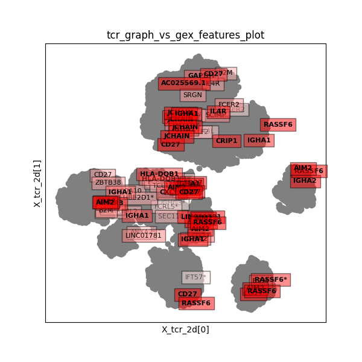
tcr_graph_vs_gex_features_panels
Graph-versus-feature analysis was used to identify a set of GEX features that showed biased distributions in TCR neighborhoods. This plot shows the distribution of the top-scoring GEX features on the TCR UMAP 2D landscape. The features are ranked by 'mwu_pvalue_adj' ie Mann-Whitney-Wilcoxon adjusted P value (raw P value * number of comparisons). At most 3 features from clonotype neighbhorhoods in each (GEX,TCR) cluster pair are shown. The raw scores for each feature are averaged over the K nearest neighbors (K is indicated in the lower right corner of each panel) for each clonotype. The min and max nbr-averaged scores are shown in the upper corners of each panel. Points are plotted in order of increasing feature score.
Image source: all_bcell_tcr_graph_vs_gex_features_panels.png
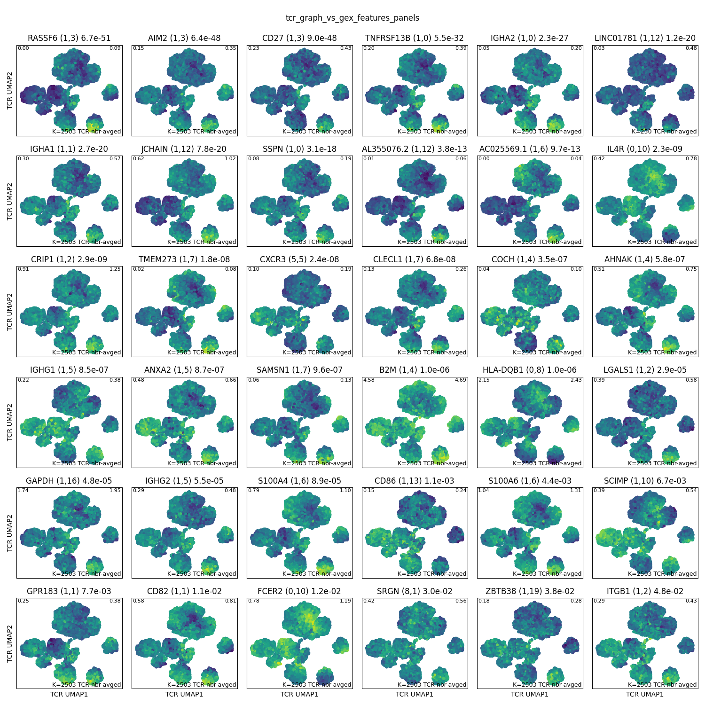
tcr_genes_vs_gex_features
This table has results from a graph-vs-features analysis in which we look for genes that are differentially expressed (elevated) in specific neighborhoods of the TCR neighbor graph. Differential expression is assessed by a ttest first, for speed, and then by a mannwhitneyu test for nbrhood/score combinations whose ttest P-value passes an initial threshold (default is 10* the pvalue threshold).
Each row of the table represents a single significant association, in other words a neighborhood (defined by the central clonotype index) and a gene.
The columns are as follows:
ttest_pvalue_adj= ttest_pvalue * number of comparisons mwu_pvalue_adj= mannwhitney-U P-value * number of comparisons log2enr = log2 fold change of gene in neighborhood (will be positive) gex_cluster= the consensus GEX cluster of the clonotypes w/ biased scores tcr_cluster= the consensus TCR cluster of the clonotypes w/ biased scores num_fg= the number of clonotypes in the neighborhood (including center) mean_fg= the mean value of the feature in the neighborhood mean_bg= the mean value of the feature outside the neighborhood feature= the name of the gene mait_fraction= the fraction of the skewed clonotypes that have an invariant TCR clone_index= the index in the anndata dataset of the clonotype that is the center of the neighborhood.
In this analysis the TCR graph is defined by connecting all clonotypes that have the same VA/JA/VB/JB-gene segment (it's run four times, once with each gene segment type)
| ttest_pvalue_adj | mwu_pvalue_adj | log2enr | gex_cluster | tcr_cluster | feature | mean_fg | mean_bg | num_fg | clone_index | mait_fraction | gene_segment | graph_type | feature_type |
|---|---|---|---|---|---|---|---|---|---|---|---|---|---|
| 1.162377e-08 | 5.902308e-192 | 8.349147 | 0 | 2 | AC135068.2 | 0.066819 | 0.000212 | 1587 | -1 | 0.0 | IGHV4-59 | tcr_genes | gex |
| 8.581360e-26 | 1.758969e-27 | 0.445878 | 5 | 16 | HLA-B | 3.690301 | 3.390242 | 948 | -1 | 0.0 | IGHV3-30 | tcr_genes | gex |
| 4.223046e+00 | 2.587339e-17 | 2.482647 | 1 | 3 | RASSF6 | 0.133016 | 0.025136 | 378 | -1 | 0.0 | IGHV3-74 | tcr_genes | gex |
| 1.261340e-18 | 1.264177e-14 | 1.062705 | 0 | 6 | TCL1A | 2.423744 | 1.779220 | 421 | -1 | 0.0 | IGKV1-8 | tcr_genes | gex |
| 4.103712e-03 | 3.981888e-13 | 1.653635 | 1 | 0 | LINC01781 | 0.380256 | 0.137194 | 378 | -1 | 0.0 | IGHV3-74 | tcr_genes | gex |
| 1.360609e-01 | 6.517809e-12 | 1.923378 | 1 | 9 | AIM2 | 0.605787 | 0.198464 | 119 | -1 | 0.0 | IGKV1-39 | tcr_genes | gex |
| 4.639063e-04 | 2.467948e-11 | 1.153724 | 1 | 0 | TNFRSF13B | 0.485439 | 0.247535 | 378 | -1 | 0.0 | IGHV3-74 | tcr_genes | gex |
| 2.213020e-07 | 9.886184e-11 | 0.734026 | 0 | 1 | IL4R | 0.885975 | 0.618937 | 792 | -1 | 0.0 | IGHV1-69D | tcr_genes | gex |
| 1.086931e-06 | 3.049943e-10 | 1.013404 | 0 | 6 | IL4R | 1.006952 | 0.620893 | 421 | -1 | 0.0 | IGKV1-8 | tcr_genes | gex |
| 8.871407e-05 | 7.657572e-10 | 1.142935 | 0 | 0 | COTL1 | 0.747841 | 0.407963 | 293 | -1 | 0.0 | IGHV1-2 | tcr_genes | gex |
| 2.256899e-10 | 4.396422e-09 | 0.422311 | 2 | 2 | HLA-DRB5 | 2.277519 | 2.019071 | 1469 | -1 | 0.0 | IGHV4-34 | tcr_genes | gex |
| 3.455988e-02 | 1.191555e-08 | 1.168764 | 1 | 0 | AIM2 | 0.399111 | 0.197354 | 378 | -1 | 0.0 | IGHV3-74 | tcr_genes | gex |
| 4.198370e-01 | 3.407757e-08 | 1.613523 | 1 | 9 | TNFRSF13B | 0.624090 | 0.249347 | 119 | -1 | 0.0 | IGKV1-39 | tcr_genes | gex |
| 8.575685e-03 | 5.304666e-08 | 0.283652 | 10 | 2 | HLA-B | 3.586876 | 3.396260 | 702 | -1 | 0.0 | IGHV4-30-4 | tcr_genes | gex |
| 4.729491e-01 | 5.596178e-08 | 1.658902 | 1 | 9 | CD27 | 0.662079 | 0.260289 | 119 | -1 | 0.0 | IGKV1-39 | tcr_genes | gex |
| 1.912632e+00 | 5.715393e-08 | 1.674543 | 1 | 9 | IGHG2 | 0.834873 | 0.342640 | 119 | -1 | 0.0 | IGKV1-39 | tcr_genes | gex |
| 6.222105e+00 | 1.094587e-07 | 1.667858 | 1 | 3 | RASSF6 | 0.077016 | 0.024884 | 903 | -1 | 0.0 | IGHV3-7 | tcr_genes | gex |
| 6.327191e-06 | 2.195702e-07 | 0.292495 | 0 | 0 | ATP5F1D | 0.547498 | 0.466972 | 4714 | -1 | 0.0 | IGLJ3 | tcr_genes | gex |
| 2.111031e-06 | 2.944683e-07 | 0.267536 | 0 | 0 | RPL13 | 4.540297 | 4.357027 | 293 | -1 | 0.0 | IGHV1-2 | tcr_genes | gex |
| 4.718929e-06 | 3.373076e-07 | 0.300387 | 0 | 1 | RPS8 | 4.295569 | 4.090507 | 293 | -1 | 0.0 | IGHV1-2 | tcr_genes | gex |
| 7.519236e+00 | 3.634691e-07 | 1.507930 | 8 | 16 | BIK | 0.066178 | 0.023772 | 948 | -1 | 0.0 | IGHV3-30 | tcr_genes | gex |
| 3.547048e-01 | 8.119042e-07 | 0.925739 | 1 | 0 | CD27 | 0.446306 | 0.259376 | 378 | -1 | 0.0 | IGHV3-74 | tcr_genes | gex |
| 1.209070e-08 | 1.056758e-06 | 0.401650 | 0 | 2 | IGHM | 1.910977 | 1.678971 | 1469 | -1 | 0.0 | IGHV4-34 | tcr_genes | gex |
| 3.149305e+00 | 1.350765e-06 | 1.653273 | 1 | 6 | CD27 | 0.661082 | 0.260712 | 93 | -1 | 0.0 | IGHV3-72 | tcr_genes | gex |
| 9.304317e-06 | 1.677305e-06 | 0.307463 | 0 | 5 | IFT57 | 0.478249 | 0.402488 | 4714 | -1 | 0.0 | IGLJ3 | tcr_genes | gex |
| 6.920536e-06 | 1.682211e-06 | 0.321188 | 0 | 1 | RPS6 | 3.745506 | 3.528748 | 293 | -1 | 0.0 | IGHV1-2 | tcr_genes | gex |
| 5.872571e-04 | 3.242872e-06 | 0.217792 | 0 | 2 | IGHM | 1.800361 | 1.675969 | 3344 | -1 | 0.0 | IGHJ3 | tcr_genes | gex |
| 4.272428e-10 | 7.639931e-06 | 0.618286 | 0 | 1 | RPS3A | 4.036645 | 3.617485 | 64 | -1 | 0.0 | IGHV1-69 | tcr_genes | gex |
| 6.007125e-02 | 9.953365e-06 | 0.254378 | 0 | 0 | RPS19 | 4.162416 | 3.989092 | 293 | -1 | 0.0 | IGHV1-2 | tcr_genes | gex |
| 5.798709e+00 | 1.093518e-05 | 1.446788 | 1 | 6 | EML6 | 0.028634 | 0.010600 | 2329 | -1 | 0.0 | IGHV3-23 | tcr_genes | gex |
| 1.061380e-02 | 1.094688e-05 | 0.726708 | 1 | 16 | TNFRSF13B | 0.379935 | 0.246307 | 903 | -1 | 0.0 | IGHV3-7 | tcr_genes | gex |
| 6.376064e+00 | 1.416241e-05 | 1.510022 | 1 | 6 | TNFRSF13B | 0.592451 | 0.249855 | 93 | -1 | 0.0 | IGHV3-72 | tcr_genes | gex |
| 1.067702e-04 | 1.586724e-05 | 0.699437 | 0 | 6 | FCER2 | 1.394203 | 1.053265 | 421 | -1 | 0.0 | IGKV1-8 | tcr_genes | gex |
| 3.831733e-03 | 2.373214e-05 | 1.407974 | 1 | 9 | CRIP1 | 1.722475 | 1.005346 | 119 | -1 | 0.0 | IGKV1-39 | tcr_genes | gex |
| 6.946784e-01 | 3.413771e-05 | 0.680338 | 1 | 3 | IGHA1 | 0.525154 | 0.358389 | 903 | -1 | 0.0 | IGHV3-7 | tcr_genes | gex |
| 1.697560e-02 | 3.960039e-05 | 0.857940 | 0 | 0 | ATP5F1D | 0.748405 | 0.478983 | 293 | -1 | 0.0 | IGHV1-2 | tcr_genes | gex |
| 1.289193e-03 | 5.207349e-05 | 0.599719 | 8 | 16 | P4HB | 0.567000 | 0.407776 | 948 | -1 | 0.0 | IGHV3-30 | tcr_genes | gex |
| 1.013179e-03 | 7.766532e-05 | 0.522317 | 8 | 16 | UBE2J1 | 0.804287 | 0.620546 | 948 | -1 | 0.0 | IGHV3-30 | tcr_genes | gex |
| 7.993857e+00 | 8.382968e-05 | 1.125868 | 1 | 16 | TFEC | 0.102002 | 0.048035 | 903 | -1 | 0.0 | IGHV3-7 | tcr_genes | gex |
| 2.797814e+00 | 8.858741e-05 | 0.591426 | 1 | 16 | IGHG2 | 0.476407 | 0.340061 | 903 | -1 | 0.0 | IGHV3-7 | tcr_genes | gex |
| 1.352888e-02 | 1.054980e-04 | 0.470567 | 5 | 2 | FGR | 0.546589 | 0.421939 | 1469 | -1 | 0.0 | IGHV4-34 | tcr_genes | gex |
| 4.976147e-02 | 1.076059e-04 | 0.656578 | 1 | 16 | JCHAIN | 0.968808 | 0.711521 | 903 | -1 | 0.0 | IGHV3-7 | tcr_genes | gex |
| 1.037094e-01 | 1.133031e-04 | 0.749543 | 1 | 16 | AIM2 | 0.310850 | 0.196267 | 903 | -1 | 0.0 | IGHV3-7 | tcr_genes | gex |
| 2.053443e-01 | 1.203319e-04 | 0.872916 | 1 | 0 | LGALS1 | 0.676586 | 0.424028 | 378 | -1 | 0.0 | IGHV3-74 | tcr_genes | gex |
| 4.560693e+00 | 1.367702e-04 | 1.168996 | 8 | 5 | AL133467.1 | 0.107027 | 0.049017 | 948 | -1 | 0.0 | IGHV3-30 | tcr_genes | gex |
| 3.229814e-02 | 3.317470e-04 | 0.332606 | 0 | 0 | RPSA | 3.210923 | 2.990779 | 293 | -1 | 0.0 | IGHV1-2 | tcr_genes | gex |
| 5.162678e+00 | 4.019399e-04 | 1.337260 | 1 | 9 | LGALS1 | 0.850706 | 0.425822 | 119 | -1 | 0.0 | IGKV1-39 | tcr_genes | gex |
| 1.963252e-02 | 4.915597e-04 | 0.917397 | 8 | 16 | FKBP11 | 0.320594 | 0.182412 | 948 | -1 | 0.0 | IGHV3-30 | tcr_genes | gex |
| 4.761180e-03 | 5.302924e-04 | 0.672486 | 8 | 16 | MYDGF | 0.496543 | 0.338936 | 948 | -1 | 0.0 | IGHV3-30 | tcr_genes | gex |
| 2.488562e-03 | 5.594840e-04 | 0.362406 | 0 | 2 | FCER2 | 1.219208 | 1.049011 | 1469 | -1 | 0.0 | IGHV4-34 | tcr_genes | gex |
tcr_genes_vs_gex_features_panels
Graph-versus-feature analysis was used to identify a set of GEX features that showed biased distributions in TCR neighborhoods. This plot shows the distribution of the top-scoring GEX features on the TCR UMAP 2D landscape. The features are ranked by 'mwu_pvalue_adj' ie Mann-Whitney-Wilcoxon adjusted P value (raw P value * number of comparisons). At most 3 features from clonotype neighbhorhoods in each (GEX,TCR) cluster pair are shown. The raw scores for each feature are averaged over the K nearest neighbors (K is indicated in the lower right corner of each panel) for each clonotype. The min and max nbr-averaged scores are shown in the upper corners of each panel. Points are plotted in order of increasing feature score.
Image source: all_bcell_tcr_genes_vs_gex_features_panels.png
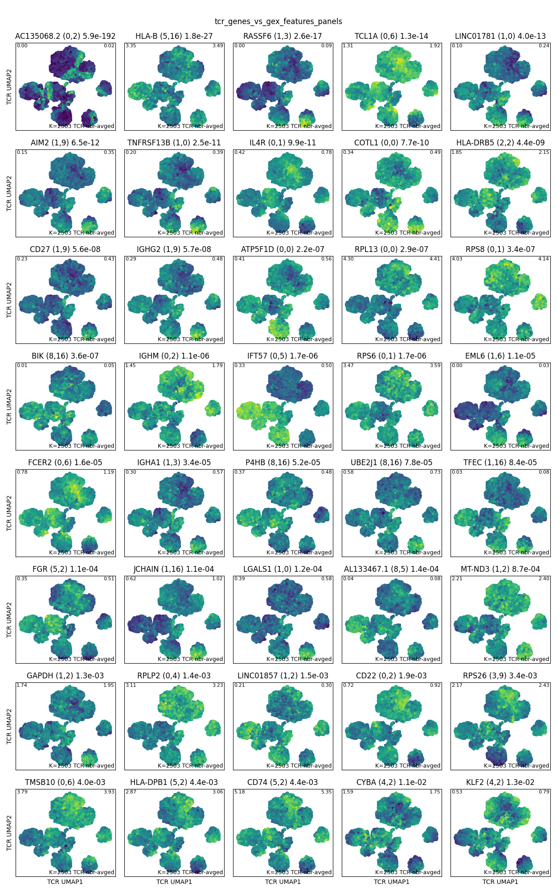
gex_graph_vs_tcr_features
This table has results from a graph-vs-features analysis in which we look at the distribution of a set of TCR-defined features over the GEX neighbor graph. We look for neighborhoods in the graph that have biased score distributions, as assessed by a ttest first, for speed, and then by a mannwhitneyu test for nbrhood/score combinations whose ttest P-value passes an initial threshold (default is 10* the pvalue threshold).
Each row of the table represents a single significant association, in other words a neighborhood (defined by the central clonotype index) and a tcr feature.
The columns are as follows:
ttest_pvalue_adj= ttest_pvalue * number of comparisons ttest_stat= ttest statistic (sign indicates where feature is up or down) mwu_pvalue_adj= mannwhitney-U P-value * number of comparisons gex_cluster= the consensus GEX cluster of the clonotypes w/ biased scores tcr_cluster= the consensus TCR cluster of the clonotypes w/ biased scores num_fg= the number of clonotypes in the neighborhood (including center) mean_fg= the mean value of the feature in the neighborhood mean_bg= the mean value of the feature outside the neighborhood feature= the name of the TCR score mait_fraction= the fraction of the skewed clonotypes that have an invariant TCR clone_index= the index in the anndata dataset of the clonotype that is the center of the neighborhood.
| ttest_pvalue_adj | ttest_stat | mwu_pvalue_adj | gex_cluster | tcr_cluster | num_fg | mean_fg | mean_bg | feature | mait_fraction | clone_index | nbr_frac | graph_type | feature_type |
|---|---|---|---|---|---|---|---|---|---|---|---|---|---|
| 1.923892e-39 | -14.485594 | 6.820888e-42 | 1 | 3 | 2504 | 1.049515 | 1.252107 | af2 | 0.0 | 7106 | 0.1 | gex_nbr | tcr |
| 4.120312e-34 | -12.922442 | 2.324045e-37 | 1 | 3 | 3324 | 1.094642 | 1.252850 | af2 | 0.0 | -1 | 0.0 | gex_cluster | tcr |
| 1.725188e-32 | -13.266542 | 9.997540e-35 | 1 | 3 | 2504 | 1.062417 | 1.250673 | af2 | 0.0 | 7558 | 0.1 | gex_nbr | tcr |
| 8.288543e-31 | -12.956410 | 2.261955e-33 | 1 | 3 | 2504 | 1.066096 | 1.250264 | af2 | 0.0 | 20708 | 0.1 | gex_nbr | tcr |
| 2.777827e-29 | -12.668237 | 4.843401e-32 | 1 | 3 | 2504 | 1.071798 | 1.249630 | af2 | 0.0 | 15386 | 0.1 | gex_nbr | tcr |
| 7.969699e-04 | 6.386804 | 2.003189e-31 | 1 | 3 | 2504 | 0.021565 | 0.002885 | IGKV1-39 | 0.0 | 2566 | 0.1 | gex_nbr | tcr |
| 7.969699e-04 | 6.386804 | 2.003189e-31 | 1 | 3 | 2504 | 0.021565 | 0.002885 | IGKV1-39 | 0.0 | 20708 | 0.1 | gex_nbr | tcr |
| 1.431791e-29 | -12.723132 | 2.576810e-31 | 1 | 3 | 2504 | 1.070555 | 1.249768 | af2 | 0.0 | 1903 | 0.1 | gex_nbr | tcr |
| 7.007185e-30 | -12.781495 | 7.630686e-31 | 1 | 3 | 2504 | 1.070437 | 1.249781 | af2 | 0.0 | 14777 | 0.1 | gex_nbr | tcr |
| 1.250985e-29 | -12.734539 | 9.733149e-31 | 1 | 3 | 2504 | 1.069780 | 1.249854 | af2 | 0.0 | 3855 | 0.1 | gex_nbr | tcr |
| 1.791758e-29 | -12.704542 | 1.633541e-30 | 1 | 3 | 2504 | 1.071051 | 1.249713 | af2 | 0.0 | 8513 | 0.1 | gex_nbr | tcr |
| 4.898472e-29 | -12.621164 | 2.709256e-30 | 1 | 3 | 2504 | 1.072705 | 1.249529 | af2 | 0.0 | 9110 | 0.1 | gex_nbr | tcr |
| 9.537759e-28 | -12.373179 | 4.584459e-30 | 1 | 3 | 2504 | 1.075477 | 1.249221 | af2 | 0.0 | 22163 | 0.1 | gex_nbr | tcr |
| 2.871736e-27 | -12.279541 | 4.958885e-29 | 1 | 3 | 2504 | 1.077463 | 1.249000 | af2 | 0.0 | 22986 | 0.1 | gex_nbr | tcr |
| 1.209330e-27 | -12.353017 | 1.031670e-28 | 1 | 3 | 2504 | 1.076007 | 1.249162 | af2 | 0.0 | 10617 | 0.1 | gex_nbr | tcr |
| 1.554767e-27 | -12.332532 | 1.167865e-28 | 1 | 3 | 2504 | 1.074623 | 1.249316 | af2 | 0.0 | 2566 | 0.1 | gex_nbr | tcr |
| 6.353459e-26 | -12.014064 | 1.536659e-28 | 1 | 3 | 2504 | 1.080837 | 1.248625 | af2 | 0.0 | 16954 | 0.1 | gex_nbr | tcr |
| 1.020512e-26 | -12.171675 | 1.746111e-28 | 1 | 3 | 2504 | 1.078369 | 1.248900 | af2 | 0.0 | 10748 | 0.1 | gex_nbr | tcr |
| 4.398073e-26 | 12.046329 | 1.855614e-28 | 1 | 3 | 2504 | 1.799805 | 1.758314 | alpha | 0.0 | 7106 | 0.1 | gex_nbr | tcr |
| 7.701674e-26 | -11.997648 | 2.265050e-28 | 1 | 3 | 2504 | 1.080468 | 1.248666 | af2 | 0.0 | 7092 | 0.1 | gex_nbr | tcr |
| 8.204103e-27 | -12.189783 | 2.753872e-28 | 1 | 3 | 2504 | 1.079353 | 1.248790 | af2 | 0.0 | 2583 | 0.1 | gex_nbr | tcr |
| 2.715925e-03 | 6.193507 | 4.679615e-28 | 1 | 3 | 2504 | 0.020767 | 0.002974 | IGKV1-39 | 0.0 | 7106 | 0.1 | gex_nbr | tcr |
| 2.715925e-03 | 6.193507 | 4.679615e-28 | 1 | 3 | 2504 | 0.020767 | 0.002974 | IGKV1-39 | 0.0 | 18430 | 0.1 | gex_nbr | tcr |
| 2.715925e-03 | 6.193507 | 4.679615e-28 | 1 | 3 | 2504 | 0.020767 | 0.002974 | IGKV1-39 | 0.0 | 6218 | 0.1 | gex_nbr | tcr |
| 2.715925e-03 | 6.193507 | 4.679615e-28 | 1 | 1 | 2504 | 0.020767 | 0.002974 | IGKV1-39 | 0.0 | 15386 | 0.1 | gex_nbr | tcr |
| 3.499796e-27 | -12.263127 | 4.953098e-28 | 1 | 3 | 2504 | 1.076826 | 1.249071 | af2 | 0.0 | 16417 | 0.1 | gex_nbr | tcr |
| 7.962007e-27 | -12.192335 | 7.464154e-28 | 1 | 3 | 2504 | 1.079337 | 1.248792 | af2 | 0.0 | 3092 | 0.1 | gex_nbr | tcr |
| 7.694951e-26 | -11.998475 | 7.985792e-28 | 1 | 3 | 2504 | 1.078721 | 1.248861 | af2 | 0.0 | 22778 | 0.1 | gex_nbr | tcr |
| 2.348428e-26 | -12.100669 | 8.501420e-28 | 1 | 3 | 2504 | 1.078130 | 1.248926 | af2 | 0.0 | 24770 | 0.1 | gex_nbr | tcr |
| 1.365634e-25 | -11.948512 | 1.287138e-27 | 1 | 3 | 2504 | 1.079678 | 1.248754 | af2 | 0.0 | 14579 | 0.1 | gex_nbr | tcr |
| 1.994504e-25 | -11.914976 | 4.036837e-27 | 1 | 3 | 2504 | 1.081354 | 1.248568 | af2 | 0.0 | 6484 | 0.1 | gex_nbr | tcr |
| 4.387651e-25 | -11.846414 | 4.784707e-27 | 1 | 3 | 2504 | 1.081308 | 1.248573 | af2 | 0.0 | 9815 | 0.1 | gex_nbr | tcr |
| 3.465923e-25 | -11.866929 | 7.278164e-27 | 1 | 3 | 2504 | 1.081396 | 1.248563 | af2 | 0.0 | 20801 | 0.1 | gex_nbr | tcr |
| 8.545849e-26 | -11.988738 | 7.550930e-27 | 1 | 3 | 2504 | 1.080330 | 1.248682 | af2 | 0.0 | 1787 | 0.1 | gex_nbr | tcr |
| 1.387540e-25 | -11.946968 | 9.923283e-27 | 1 | 3 | 2504 | 1.080071 | 1.248711 | af2 | 0.0 | 17511 | 0.1 | gex_nbr | tcr |
| 5.004270e-03 | 6.095045 | 1.966727e-26 | 1 | 3 | 2504 | 0.020367 | 0.003019 | IGKV1-39 | 0.0 | 24260 | 0.1 | gex_nbr | tcr |
| 9.791031e-25 | -11.775683 | 1.973902e-26 | 1 | 3 | 2504 | 1.082579 | 1.248432 | af2 | 0.0 | 1919 | 0.1 | gex_nbr | tcr |
| 2.268971e-25 | -11.903637 | 2.231510e-26 | 1 | 3 | 2504 | 1.081701 | 1.248529 | af2 | 0.0 | 20053 | 0.1 | gex_nbr | tcr |
| 3.455385e-24 | -11.663648 | 3.192525e-26 | 1 | 3 | 2504 | 1.084934 | 1.248170 | af2 | 0.0 | 2981 | 0.1 | gex_nbr | tcr |
| 1.394886e-24 | -11.744854 | 4.794723e-26 | 1 | 3 | 2504 | 1.081976 | 1.248499 | af2 | 0.0 | 14358 | 0.1 | gex_nbr | tcr |
| 2.300528e-24 | -11.700456 | 6.780349e-26 | 1 | 3 | 2504 | 1.082799 | 1.248407 | af2 | 0.0 | 11525 | 0.1 | gex_nbr | tcr |
| 1.738793e-23 | 11.519903 | 6.819559e-26 | 1 | 3 | 2504 | -0.547885 | -0.722295 | kf7 | 0.0 | 20708 | 0.1 | gex_nbr | tcr |
| 9.345321e-24 | -11.574269 | 1.012811e-25 | 1 | 3 | 2504 | 1.087537 | 1.247881 | af2 | 0.0 | 1193 | 0.1 | gex_nbr | tcr |
| 6.586492e-24 | -11.605896 | 1.123636e-25 | 1 | 3 | 2504 | 1.086312 | 1.248017 | af2 | 0.0 | 1861 | 0.1 | gex_nbr | tcr |
| 4.466949e-24 | -11.641532 | 1.268900e-25 | 1 | 3 | 2504 | 1.083420 | 1.248338 | af2 | 0.0 | 12470 | 0.1 | gex_nbr | tcr |
| 4.614042e-23 | -11.430675 | 1.500255e-25 | 1 | 3 | 2504 | 1.088987 | 1.247720 | af2 | 0.0 | 22510 | 0.1 | gex_nbr | tcr |
| 1.038831e-24 | -11.771188 | 1.962279e-25 | 1 | 3 | 2504 | 1.080871 | 1.248622 | af2 | 0.0 | 9843 | 0.1 | gex_nbr | tcr |
| 1.149930e-24 | -11.761363 | 2.081053e-25 | 1 | 3 | 2504 | 1.083084 | 1.248376 | af2 | 0.0 | 17470 | 0.1 | gex_nbr | tcr |
| 3.893058e-24 | -11.653389 | 2.669346e-25 | 1 | 3 | 2504 | 1.084219 | 1.248250 | af2 | 0.0 | 1915 | 0.1 | gex_nbr | tcr |
| 1.938526e-24 | -11.715533 | 3.064751e-25 | 1 | 3 | 2504 | 1.082844 | 1.248402 | af2 | 0.0 | 10228 | 0.1 | gex_nbr | tcr |
gex_graph_vs_tcr_features_plot
This plot summarizes the results of a graph versus features analysis by labeling the clonotypes at the center of each biased neighborhood with the name of the feature biased in that neighborhood. The feature names are drawn in colored boxes whose color is determined by the strength and direction of the feature score bias (from bright red for features that are strongly elevated to bright blue for features that are strongly decreased in the corresponding neighborhoods, relative to the rest of the dataset).
At most one feature (the top scoring) is shown for each clonotype (ie, neighborhood). The UMAP xy coordinates for this plot are stored in adata.obsm['X_gex_2d']. The score used for ranking correlations is 'mwu_pvalue_adj'. The threshold score for displaying a feature is 1.0. The feature column is 'feature'. Since we also run graph-vs-features using "neighbor" graphs that are defined by clusters, ie where each clonotype is connected to all the other clonotypes in the same cluster, some biased features may be associated with a cluster rather than a specific clonotype. Those features are labeled with a '*' at the end and shown near the centroid of the clonotypes belonging to that cluster.
Image source: all_bcell_gex_graph_vs_tcr_features_plot.png
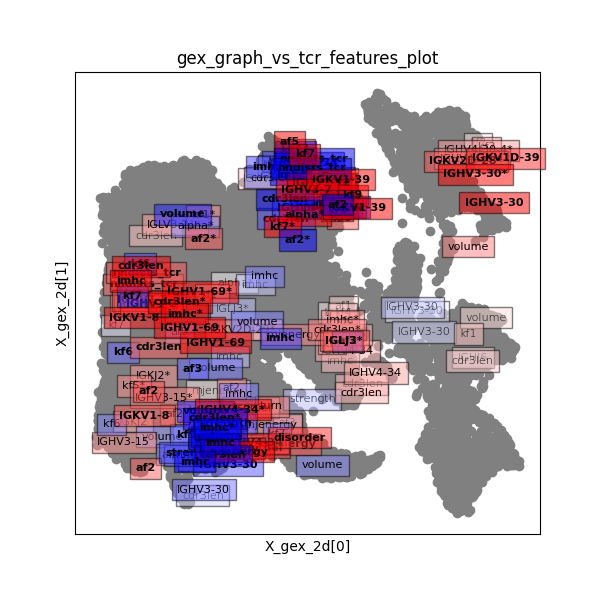
gex_graph_vs_tcr_features_panels
Graph-versus-feature analysis was used to identify a set of TCR features that showed biased distributions in GEX neighborhoods. This plot shows the distribution of the top-scoring TCR features on the GEX UMAP 2D landscape. The features are ranked by 'mwu_pvalue_adj' ie Mann-Whitney-Wilcoxon adjusted P value (raw P value * number of comparisons). At most 3 features from clonotype neighbhorhoods in each (GEX,TCR) cluster pair are shown. The raw scores for each feature are averaged over the K nearest neighbors (K is indicated in the lower right corner of each panel) for each clonotype. The min and max nbr-averaged scores are shown in the upper corners of each panel. Points are plotted in order of increasing feature score.
Image source: all_bcell_gex_graph_vs_tcr_features_panels.png
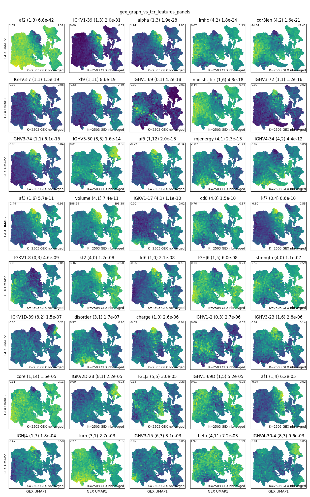
graph_vs_features_gex_clustermap
This plot shows the distribution of significant features from graph-vs-features or HotSpot analysis plotted across the GEX landscape. Rows are features and columns are individual clonotypes. Columns are ordered by hierarchical clustering (if a dendrogram is present above the heatmap) or by a 1D UMAP projection (used for very large datasets or if 'X_pca_gex' is not present in adata.obsm_keys()). Rows are ordered by hierarchical clustering with a correlation metric.
The row colors to the left of the heatmap show the feature type (blue=TCR, orange=GEX). The row colors to the left of those indicate the strength of the graph-vs-feature correlation (also included in the feature labels to the right of the heatmap; keep in mind that highly significant P values for some features may shift the colorscale so everything else looks dark blue).
The column colors above the heatmap are GEX clusters (and TCR V/J genes if plotting against the TCR landscape). The text above the column colors provides more info.
Feature scores are Z-score normalized and then averaged over the K=250 nearest neighbors (0 means no nbr-averaging).
The 'coolwarm' colormap is centered at Z=0.
Since features of the same type (GEX or TCR) as the landscape and neighbor graph (ie GEX features) are more highly correlated over graph neighborhoods, their neighbor-averaged scores will show more extreme variation. For this reason, the nbr-averaged scores for these features from the same modality as the landscape itself are downscaled by a factor of rescale_factor_for_self_features=0.33.
The colormap in the top left is for the Z-score normalized, neighbor-averaged scores (multiply by 3.03 to get the color scores for the GEX features).
Image source: all_bcell_graph_vs_features_gex_clustermap.png
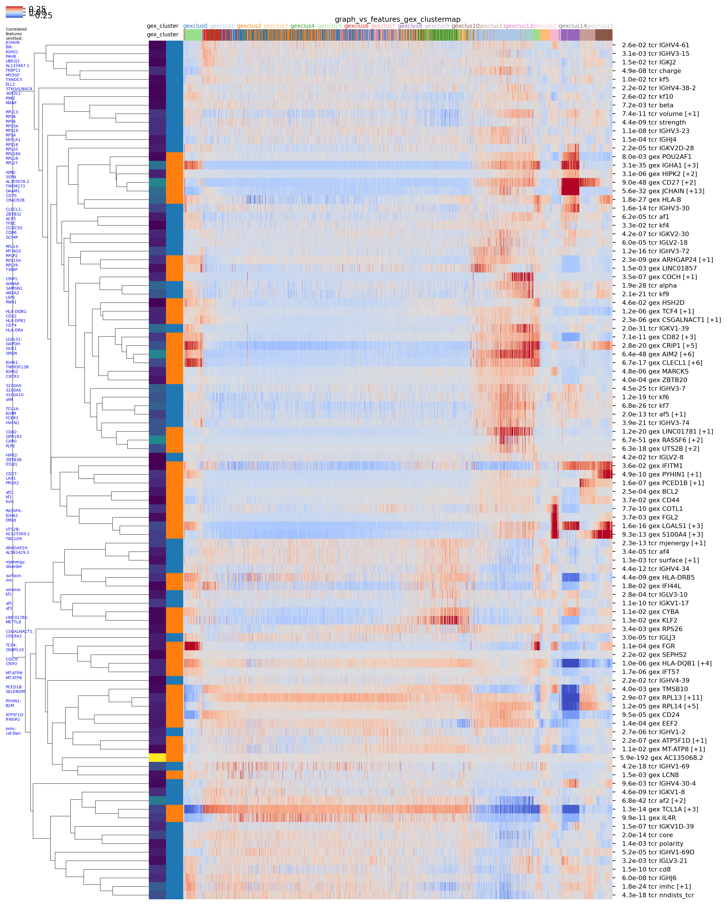
graph_vs_features_tcr_clustermap
This plot shows the distribution of significant features from graph-vs-features or HotSpot analysis plotted across the TCR landscape. Rows are features and columns are individual clonotypes. Columns are ordered by hierarchical clustering (if a dendrogram is present above the heatmap) or by a 1D UMAP projection (used for very large datasets or if 'X_pca_tcr' is not present in adata.obsm_keys()). Rows are ordered by hierarchical clustering with a correlation metric.
The row colors to the left of the heatmap show the feature type (blue=TCR, orange=GEX). The row colors to the left of those indicate the strength of the graph-vs-feature correlation (also included in the feature labels to the right of the heatmap; keep in mind that highly significant P values for some features may shift the colorscale so everything else looks dark blue).
The column colors above the heatmap are TCR clusters (and TCR V/J genes if plotting against the TCR landscape). The text above the column colors provides more info.
Feature scores are Z-score normalized and then averaged over the K=250 nearest neighbors (0 means no nbr-averaging).
The 'coolwarm' colormap is centered at Z=0.
Since features of the same type (GEX or TCR) as the landscape and neighbor graph (ie TCR features) are more highly correlated over graph neighborhoods, their neighbor-averaged scores will show more extreme variation. For this reason, the nbr-averaged scores for these features from the same modality as the landscape itself are downscaled by a factor of rescale_factor_for_self_features=0.33.
The colormap in the top left is for the Z-score normalized, neighbor-averaged scores (multiply by 3.03 to get the color scores for the TCR features).
Image source: all_bcell_graph_vs_features_tcr_clustermap.png
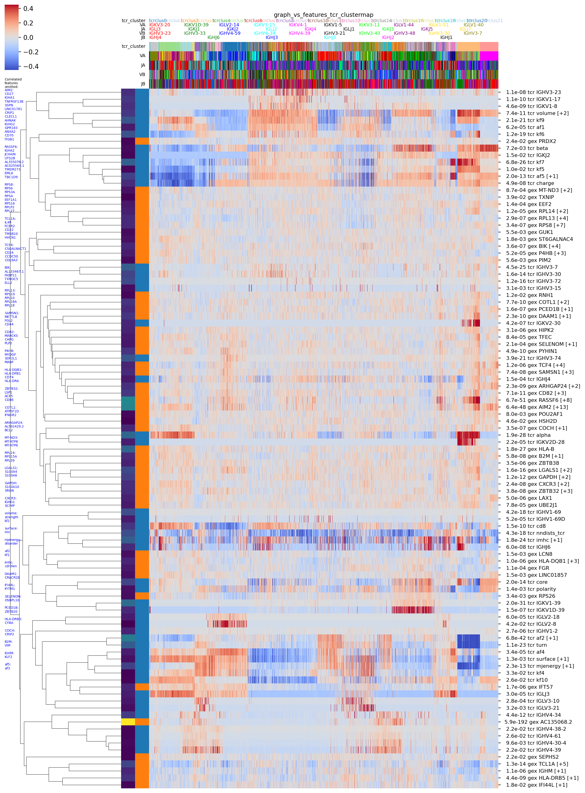
graph_vs_summary
Summary figure for the graph-vs-graph and graph-vs-features analyses.
Image source: all_bcell_graph_vs_summary.png
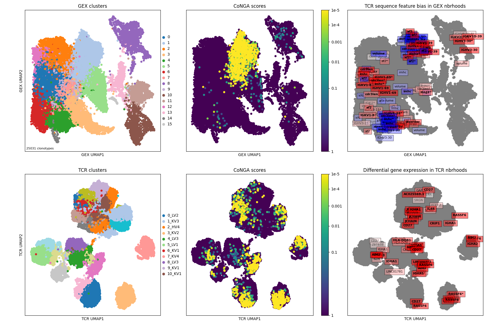
gex_clusters_tcrdist_trees
These are TCRdist hierarchical clustering trees for the GEX clusters (cluster assignments stored in adata.obs['clusters_gex']). The trees are colored by CoNGA score with a color score range of 2.50e+02 (blue) to 2.50e-07 (red). For coloring, CoNGA scores are log-transformed, negated, and square-rooted (with an offset in there, too, roughly speaking).
Image source: all_bcell_gex_clusters_tcrdist_trees.png

conga_threshold_tcrdist_tree
This is a TCRdist hierarchical clustering tree for the clonotypes with CoNGA score less than 10.0. The tree is colored by CoNGA score with a color score range of 1.00e+01 (blue) to 1.00e-08 (red). For coloring, CoNGA scores are log-transformed, negated, and square-rooted (with an offset in there, too, roughly speaking).
Image source: all_bcell_conga_threshold_tcrdist_tree.png
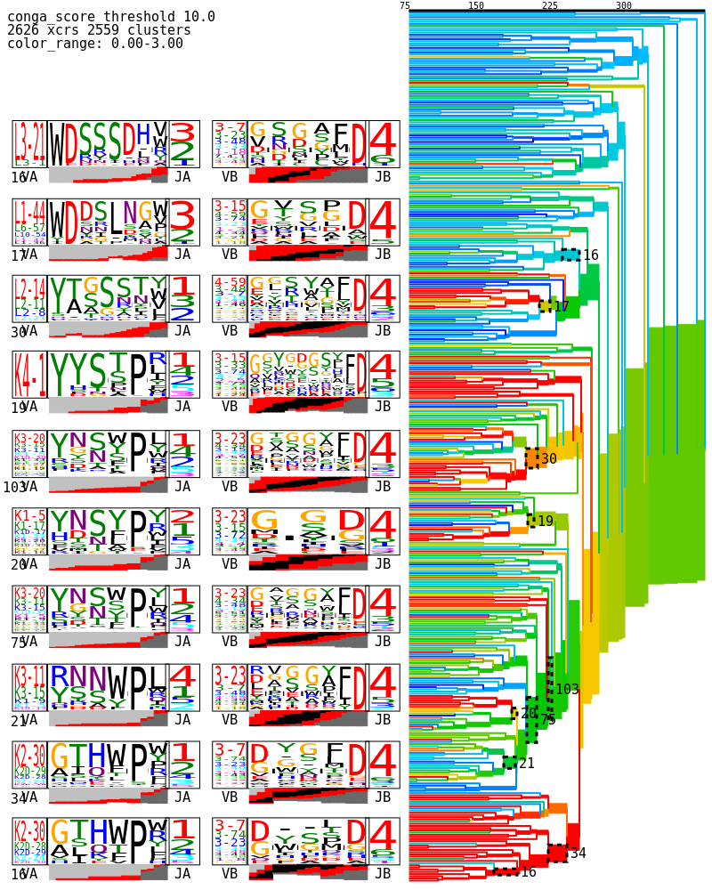
hotspot_features
Find GEX (TCR) features that show a biased distribution across the TCR (GEX) neighbor graph, using a simplified version of the Hotspot method from the Yosef lab.
DeTomaso, D., & Yosef, N. (2021). "Hotspot identifies informative gene modules across modalities of single-cell genomics." Cell Systems, 12(5), 446–456.e9.
PMID:33951459
Columns:
Z: HotSpot Z statistic
pvalue_adj: Raw P value times the number of tests (crude Bonferroni correction)
nbr_frac: The K NN nbr fraction used for the neighbor graph construction (nbr_frac = 0.1 means K=0.1*num_clonotypes neighbors)
| Z | pvalue_adj | feature | feature_type | nbr_frac |
|---|---|---|---|---|
| 54.925242 | 0.000000e+00 | gex_cluster1 | gex | 0.10 |
| 51.101410 | 0.000000e+00 | TCL1A | gex | 0.10 |
| 46.610037 | 0.000000e+00 | cdr3len | tcr | 0.10 |
| 45.867720 | 0.000000e+00 | imhc | tcr | 0.10 |
| 43.161363 | 0.000000e+00 | RASSF6 | gex | 0.10 |
| 40.056613 | 0.000000e+00 | gex_cluster1 | gex | 0.01 |
| 38.253121 | 0.000000e+00 | TCL1A | gex | 0.01 |
| 36.497384 | 1.104234e-289 | af2 | tcr | 0.10 |
| 34.006251 | 1.978637e-249 | AIM2 | gex | 0.10 |
| 33.196803 | 1.083461e-239 | kf7 | tcr | 0.10 |
| 32.970505 | 2.363035e-234 | FCER2 | gex | 0.10 |
| 31.631026 | 1.519591e-215 | IGHA2 | gex | 0.10 |
| 31.248886 | 2.092093e-212 | cdr3len | tcr | 0.01 |
| 31.272985 | 1.194803e-210 | RASSF6 | gex | 0.01 |
| 30.012159 | 6.163647e-196 | imhc | tcr | 0.01 |
| 30.115875 | 3.299136e-195 | IL4R | gex | 0.10 |
| 30.039505 | 3.289187e-194 | IGHM | gex | 0.10 |
| 29.151481 | 7.240608e-185 | IGKV1-39 | tcr | 0.10 |
| 28.522031 | 6.862191e-175 | TNFRSF13B | gex | 0.10 |
| 27.872359 | 6.342549e-167 | CD27 | gex | 0.10 |
| 27.521125 | 1.077905e-162 | gex_cluster4 | gex | 0.10 |
| 27.251811 | 1.737832e-159 | IGHA1 | gex | 0.10 |
| 27.071679 | 2.332123e-157 | JCHAIN | gex | 0.10 |
| 26.573869 | 1.495443e-151 | gex_cluster0 | gex | 0.10 |
| 25.576352 | 2.530874e-142 | volume | tcr | 0.10 |
| 25.070642 | 1.142541e-134 | AIM2 | gex | 0.01 |
| 24.051681 | 8.807642e-124 | LINC01781 | gex | 0.10 |
| 23.769560 | 6.242430e-123 | kf6 | tcr | 0.10 |
| 22.749589 | 1.310900e-112 | af2 | tcr | 0.01 |
| 22.597655 | 4.135861e-111 | IGHV3-7 | tcr | 0.10 |
| 22.537777 | 1.944512e-108 | PLPP5 | gex | 0.10 |
| 22.263603 | 7.536578e-108 | turn | tcr | 0.10 |
| 21.958280 | 6.532303e-105 | nndists_tcr | tcr | 0.10 |
| 21.924678 | 1.660178e-102 | HLA-DRB5 | gex | 0.10 |
| 21.576963 | 3.248460e-99 | CD27 | gex | 0.01 |
| 21.151790 | 2.918885e-95 | TNFRSF13B | gex | 0.01 |
| 20.932897 | 2.951808e-93 | IGHM | gex | 0.01 |
| 20.688364 | 3.990303e-93 | alpha | tcr | 0.10 |
| 20.682867 | 4.472102e-93 | kf9 | tcr | 0.10 |
| 20.860602 | 1.341792e-92 | IGHA2 | gex | 0.01 |
| 20.534470 | 9.589803e-92 | IGHV3-74 | tcr | 0.10 |
| 20.155122 | 2.196062e-88 | kf7 | tcr | 0.01 |
| 20.053393 | 2.071448e-85 | IFT57 | gex | 0.10 |
| 19.965956 | 1.196750e-84 | KLF2 | gex | 0.10 |
| 19.947607 | 1.727550e-84 | FCER2 | gex | 0.01 |
| 19.867129 | 8.609187e-84 | CRIP1 | gex | 0.10 |
| 19.602763 | 1.609072e-81 | AC135068.2 | gex | 0.10 |
| 19.339241 | 2.759305e-79 | IGHA1 | gex | 0.01 |
| 18.952477 | 3.812592e-78 | IGHV4-34 | tcr | 0.10 |
| 18.778184 | 1.030887e-76 | kf2 | tcr | 0.10 |
hotspot_gex_umap
HotSpot analysis (Nir Yosef lab, PMID: 33951459) was used to identify a set of GEX (TCR) features that showed biased distributions in TCR (GEX) space. This plot shows the distribution of the top-scoring HotSpot features on the GEX UMAP 2D landscape. The features are ranked by adjusted P value (raw P value * number of comparisons). The raw scores for each feature are averaged over the K nearest neighbors (K is indicated in the lower right corner of each panel) for each clonotype. The min and max nbr-averaged scores are shown in the upper corners of each panel.
Features are filtered based on correlation coefficient to reduce redundancy: if a feature has a correlation of >= 0.9 (the max_feature_correlation argument to conga.plotting.plot_hotspot_umap) to a previously plotted feature, that feature is skipped. Points are plotted in order of increasing feature score
Image source: all_bcell_hotspot_combo_features_0.100_nbrs_gex_plot_umap_nbr_avg.png
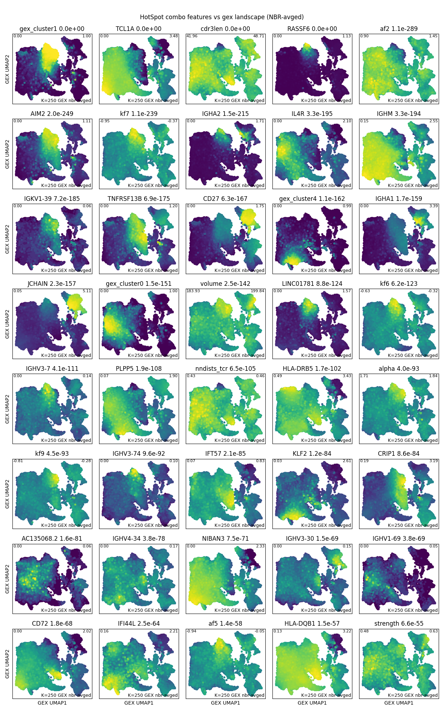
hotspot_gex_clustermap
This plot shows the distribution of significant features from graph-vs-features or HotSpot analysis plotted across the GEX landscape. Rows are features and columns are individual clonotypes. Columns are ordered by hierarchical clustering (if a dendrogram is present above the heatmap) or by a 1D UMAP projection (used for very large datasets or if 'X_pca_gex' is not present in adata.obsm_keys()). Rows are ordered by hierarchical clustering with a correlation metric.
The row colors to the left of the heatmap show the feature type (blue=TCR, orange=GEX). The row colors to the left of those indicate the strength of the graph-vs-feature correlation (also included in the feature labels to the right of the heatmap; keep in mind that highly significant P values for some features may shift the colorscale so everything else looks dark blue).
The column colors above the heatmap are GEX clusters (and TCR V/J genes if plotting against the TCR landscape). The text above the column colors provides more info.
Feature scores are Z-score normalized and then averaged over the K=250 nearest neighbors (0 means no nbr-averaging).
The 'coolwarm' colormap is centered at Z=0.
Since features of the same type (GEX or TCR) as the landscape and neighbor graph (ie GEX features) are more highly correlated over graph neighborhoods, their neighbor-averaged scores will show more extreme variation. For this reason, the nbr-averaged scores for these features from the same modality as the landscape itself are downscaled by a factor of rescale_factor_for_self_features=0.33.
The colormap in the top left is for the Z-score normalized, neighbor-averaged scores (multiply by 3.03 to get the color scores for the GEX features).
Image source: all_bcell_hotspot_combo_features_0.100_nbrs_gex_plot_clustermap_nbr_avg.png
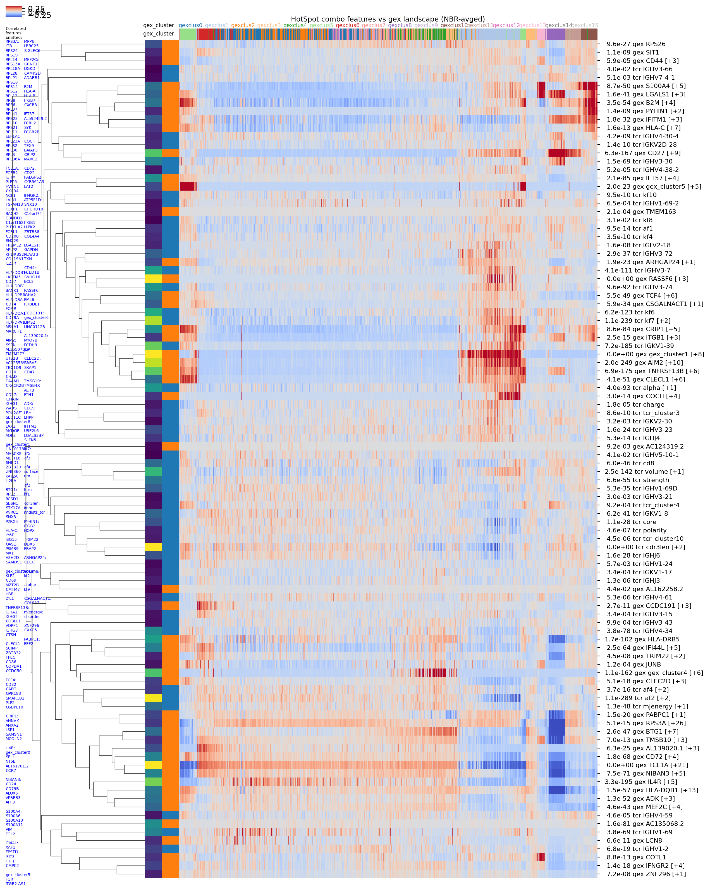
hotspot_tcr_umap
HotSpot analysis (Nir Yosef lab, PMID: 33951459) was used to identify a set of GEX (TCR) features that showed biased distributions in TCR (GEX) space. This plot shows the distribution of the top-scoring HotSpot features on the TCR UMAP 2D landscape. The features are ranked by adjusted P value (raw P value * number of comparisons). The raw scores for each feature are averaged over the K nearest neighbors (K is indicated in the lower right corner of each panel) for each clonotype. The min and max nbr-averaged scores are shown in the upper corners of each panel.
Features are filtered based on correlation coefficient to reduce redundancy: if a feature has a correlation of >= 0.9 (the max_feature_correlation argument to conga.plotting.plot_hotspot_umap) to a previously plotted feature, that feature is skipped. Points are plotted in order of increasing feature score
Image source: all_bcell_hotspot_combo_features_0.100_nbrs_tcr_plot_umap_nbr_avg.png
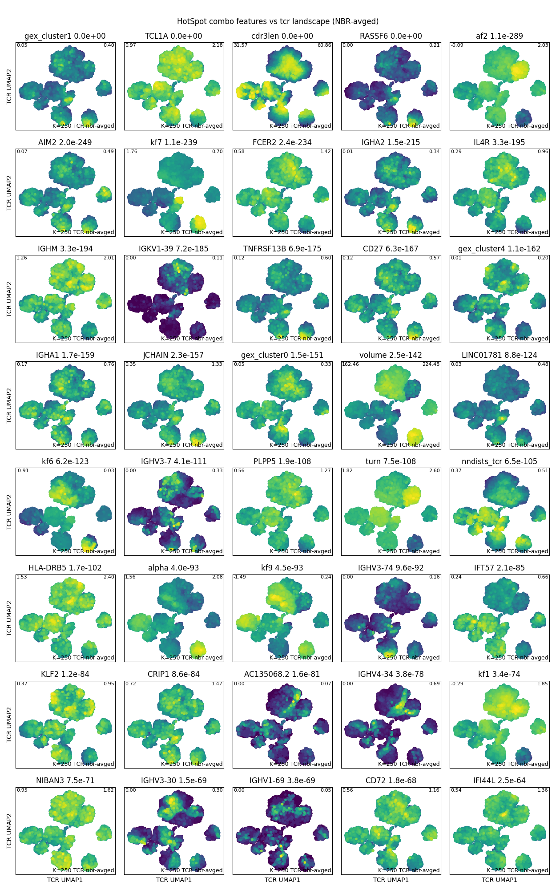
hotspot_tcr_clustermap
This plot shows the distribution of significant features from graph-vs-features or HotSpot analysis plotted across the TCR landscape. Rows are features and columns are individual clonotypes. Columns are ordered by hierarchical clustering (if a dendrogram is present above the heatmap) or by a 1D UMAP projection (used for very large datasets or if 'X_pca_tcr' is not present in adata.obsm_keys()). Rows are ordered by hierarchical clustering with a correlation metric.
The row colors to the left of the heatmap show the feature type (blue=TCR, orange=GEX). The row colors to the left of those indicate the strength of the graph-vs-feature correlation (also included in the feature labels to the right of the heatmap; keep in mind that highly significant P values for some features may shift the colorscale so everything else looks dark blue).
The column colors above the heatmap are TCR clusters (and TCR V/J genes if plotting against the TCR landscape). The text above the column colors provides more info.
Feature scores are Z-score normalized and then averaged over the K=250 nearest neighbors (0 means no nbr-averaging).
The 'coolwarm' colormap is centered at Z=0.
Since features of the same type (GEX or TCR) as the landscape and neighbor graph (ie TCR features) are more highly correlated over graph neighborhoods, their neighbor-averaged scores will show more extreme variation. For this reason, the nbr-averaged scores for these features from the same modality as the landscape itself are downscaled by a factor of rescale_factor_for_self_features=0.33.
The colormap in the top left is for the Z-score normalized, neighbor-averaged scores (multiply by 3.03 to get the color scores for the TCR features).
Image source: all_bcell_hotspot_combo_features_0.100_nbrs_tcr_plot_clustermap_nbr_avg.png
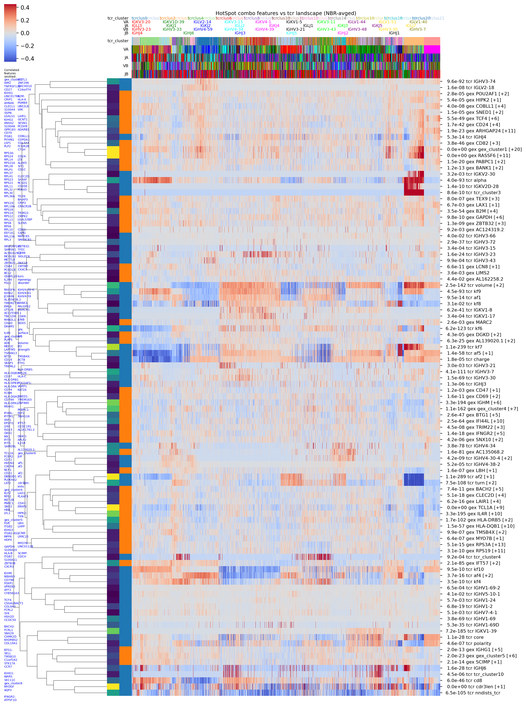